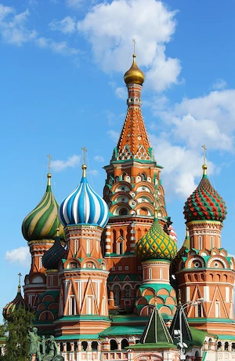

About me
Hello! My name is Harry and I am from Moscow, RU.
I enjoy pythoning, swimming and skiing.
I work for a consulting company.
Russia
Russia, or the Russian Federation, is a country spanning Eastern Europe and North Asia. It is the largest country in the world by area, extending across eleven time zones and sharing land borders with fourteen countries. It is the world's ninth-most populous country and Europe's most populous country. Russia is a highly urbanised country including 16 population centres with over a million inhabitants. Its capital and largest city is Moscow.